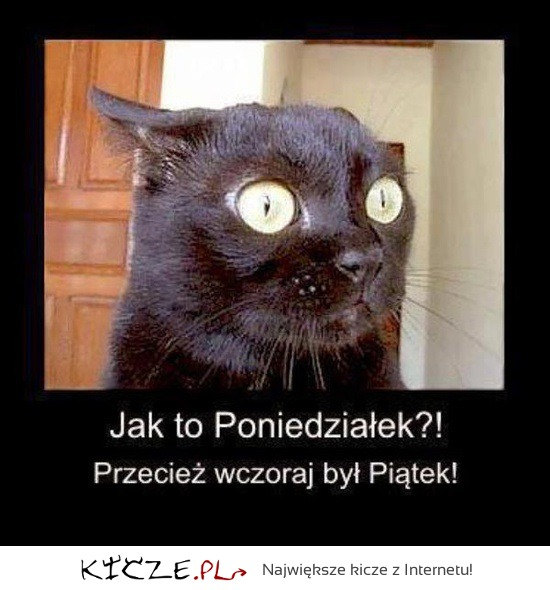

Krótki opis ponedziałku
Poniedziałek (poniedziałek i, skrót pn. lub pon.[1], symbol w kalendarzu Pn) – dzień tygodnia między niedzielą a wtorkiem. Według normy ISO-8601 jest pierwszym dniem tygodnia[2]. W tradycji biblijnej – chrześcijańskiej i żydowskiej, gdzie za pierwszy dzień tygodnia uznawana jest niedziela, poniedziałek jest dniem drugim[3]. Znajduje to odzwierciedlenie m.in. w port. segunda-feira „drugi targ”; orm. Երկուշաբթին „drugi dzień”; greckim: δευτέρα (deftera) od δεύτερος „drugi”. Polska nazwa dnia określa jego następstwo po niedzieli – dniu odpoczynku: poniedziałek - po niedzieli. Nazwę tę dzielą wszystkie języki słowiańskie: np. cz. pondělí, ros. понедельник (poniedielnik), serb.-chorw. ponedjeljak. Łacińska nazwa dies Lunae „dzień Księżyca” wpłynęła na nazewnictwo innych języków europejskich, np. hiszp. lunes, fr. lundi, ang. Monday, niem. Montag. W Indiach nosi nazwę somwar i jest związany z Somą, bóstwem lunarnym. Również japońska nazwa poniedziałku 月曜日, wiąże się z księżycem (月 – tsuki „Księżyc”).
